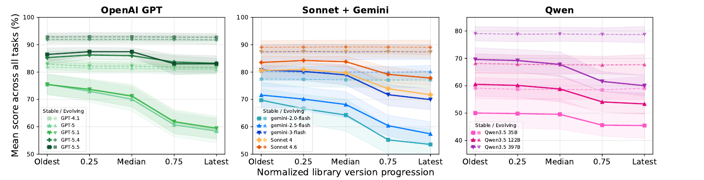
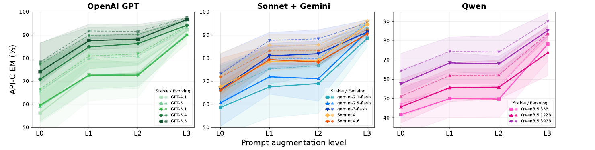

Large software projects often depend on older versions of libraries, even as APIs continue to evolve across releases. This creates a challenge for LLMs: they must maintain knowledge of multiple API versions, not merely the latest or most common one. However, current LLMs are trained on temporally mixed corpora and lack explicit mechanisms for such version-specific reasoning, leading to anachronistic errors: calling APIs as they exist in a different library version.
To systematically evaluate this phenomenon, we introduce LibEvoBench, a multi-task benchmark spanning multiple versions of widely used Python libraries, along with a new metric, the Software Evolution Understanding Score (SEUS), to measure models’ consistency when working with evolving APIs. Our results show that state-of-the-art models are largely version-oblivious: performance degrades for evolving APIs, while for stable APIs it remains the same across versions. Moreover, simply specifying the target version provides no benefit, while relevant documentation significantly boosts models’ accuracy. These findings highlight a systematic limitation of current training paradigms and motivate new approaches for temporally grounded knowledge in code generation.
13 models, evaluated by the authors at zero temperature with no thinking budget.
Loading the leaderboard…
For every tracked release, the public API surface is rebuilt from the official Sphinx inventory and from runtime introspection, and an API counts as present only when both agree. The resulting compatibility matrices split APIs into stable ones, whose signature never changes, and evolving ones, which are added, removed or modified within the covered releases.
| Library | Versions | API-C | API-I | SR |
|---|---|---|---|---|
| PyTorch | 10 | 16,444 | 17,036 | 25,656 |
| NumPy | 10 | 9,275 | 9,385 | 11,386 |
| SciPy | 9 | 3,948 | 13,244 | 18,052 |
| Total | 29 | 29,667 | 39,665 | 55,094 |
Every wrong answer is classified by matrix lookup, with no manual coding: invalid (a real symbol at that version, but the wrong one), anachronistic (exists in another release, not the requested one) or unknown (never existed in any tracked release). Models are ranked by the Software Evolution Understanding Score (SEUS), which averages the harmonic mean of stable and evolving scores and subtracts a stability penalty and an anachronism penalty.

Mean score across API-C@L1, API-I and SR over normalized library version. Stable APIs dashed, evolving APIs solid.

API Calling accuracy by prompt level. The docstring drives the L0→L1 gain; the version constraint at L2 adds nothing.
The benchmark is on Hugging Face, one configuration per library and table. Configuration names follow <library>__<table>, with library torch, numpy or scipy.
| Table | Contents |
|---|---|
benchmark_t1 | API Calling (API-C) instances, prompt levels L0–L3 |
benchmark_t2 | API Identification (API-I) instances |
benchmark_t3 | Signature Recall (SR) instances |
api_comp_matrix | Which APIs exist in which release |
sign_comp_matrix | The signature of each API in each release |
api_dictionary | The tracked APIs |
from datasets import load_dataset
# API Calling instances for PyTorch
ds = load_dataset("JetBrains/LibEvoBench", "torch__benchmark_t1", split="train")The code repository has the pipeline that builds the matrices and tasks, the evaluation scripts, and the model outputs behind the results in the paper.
@inproceedings{cipollone2026libevobench,
title = {{LibEvoBench}: Probing Temporal Knowledge Stratification
in Code Generation Models},
author = {Cipollone, Daniele and Titov, Sergey and Izadi, Maliheh
and Bogomolov, Egor and van Deursen, Arie},
booktitle = {Advances in Neural Information Processing Systems},
year = {2026}
}